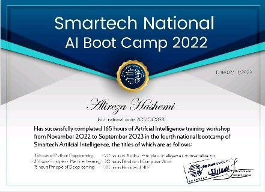
Smartech National AI Bootcamp 2022
A comprehensive bootcamp on AI fundamentals, where I gained hands-on experience with machine learning algorithms and AI technologies.
Here, you can learn more about me, explore my academic and professional journey, and dive into the projects I've worked on in the field of Artificial Intelligence, Machine Learning, and Computer Vision.
As an accomplished AI Research Engineer and Machine Learning Specialist with over three years of specialized experience, I have established myself at the intersection of artificial intelligence, computer vision, and medical imaging. My expertise lies in developing innovative AI solutions that address complex challenges in healthcare diagnostics and medical image analysis. Through rigorous research and practical implementation, I have consistently delivered cutting-edge applications that enhance diagnostic accuracy and improve patient outcomes.
My technical proficiency spans the complete AI development lifecycle—from data preprocessing and model architecture design to deployment and performance optimization. I have mastered advanced deep learning frameworks including PyTorch and TensorFlow, with particular expertise in implementing state-of-the-art computer vision models such as YOLO, ResNet, and EfficientNet architectures. My work in medical imaging has focused on developing high-precision classification and segmentation models that assist healthcare professionals in early disease detection and treatment planning.
Beyond technical skills, I bring a collaborative mindset and research-oriented approach to every project. I thrive in multidisciplinary environments where I can translate complex AI concepts into practical solutions that create measurable impact. My commitment to continuous learning keeps me at the forefront of AI advancements, allowing me to implement novel techniques that push the boundaries of what's possible in computer vision and medical image analysis.
As a specialized AI/ML Engineer with a focus on computer vision and medical imaging, I have developed a comprehensive portfolio of projects that demonstrate my expertise in creating innovative solutions for complex problems. My work spans multiple domains, with particular emphasis on medical diagnostics, real-time object detection, and advanced classification systems. Each project in my portfolio represents a unique technical challenge that I've addressed through careful research, algorithmic innovation, and rigorous implementation.
My research in medical imaging has produced several breakthrough applications, including high-accuracy classification systems for detecting conditions such as Alzheimer's disease, pneumonia, skin cancer, and diabetic retinopathy. These systems leverage state-of-the-art deep learning architectures and transfer learning techniques to achieve diagnostic accuracy that approaches or exceeds human-level performance. Beyond healthcare, I've developed sophisticated computer vision applications for sports classification, emotion detection, and real-time pose estimation that demonstrate my versatility across different AI domains.
My technical expertise is built on a foundation of advanced frameworks and tools that enable me to design, implement, and optimize complex AI systems efficiently:
Each project in my portfolio demonstrates not only technical proficiency but also a commitment to solving real-world problems through innovative AI applications. My approach combines theoretical knowledge with practical implementation skills, allowing me to develop solutions that are both technically sophisticated and practically valuable. For a comprehensive overview of my professional experience, technical skills, and academic background, please download my CV.
Here are some of the projects I've worked on in the field of AI and Machine Learning:
Designed and implemented a deep learning model for multi-class classification on the Sport100 dataset, accurately distinguishing between 100 different sports categories. Leveraged transfer learning with pretrained models such as ResNet18, ResNet50, and YOLOv8m, achieving over 97% accuracy with YOLO. Employed fine-tuning, data augmentation, and optimization techniques to enhance model performance. This project showcases the power of AI in large-scale image classification tasks, demonstrating the effectiveness of deep learning in recognizing complex visual patterns.
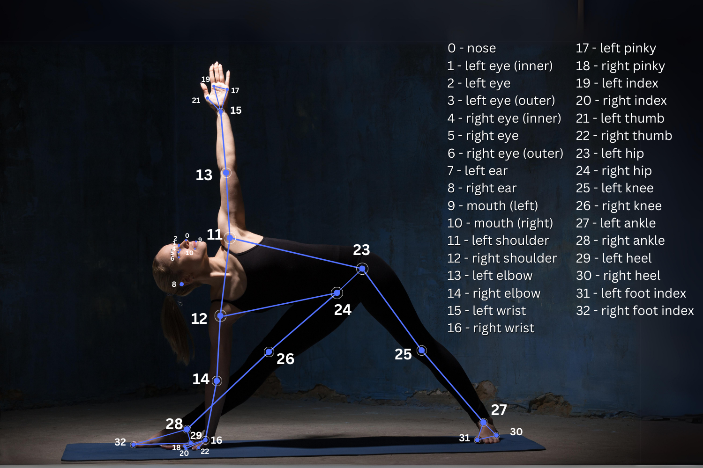
An advanced AI-powered fitness assistant that utilizes MediaPipe and YOLO-based pose estimation to analyze body movements in real time. The system detects and evaluates Squats and Lateral Double Raises, providing instant feedback on posture correctness while counting both correct and incorrect repetitions. By leveraging computer vision and deep learning, this self-coaching solution enhances workout efficiency, ensuring users maintain proper form without needing a personal trainer. 🚀💪
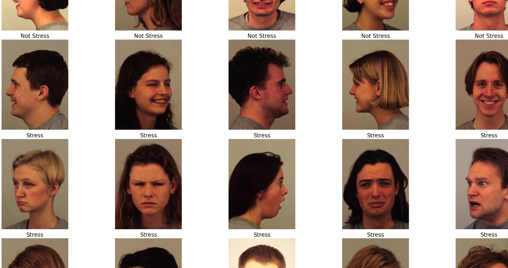
Developed a high-accuracy emotion classification model to distinguish between stress and non-stress states using large-scale, high-quality data. Leveraged ResNet-18, ResNet-50, and YOLO for feature extraction and classification, achieving over 98% accuracy with YOLO. This project demonstrates the effectiveness of deep learning in mental health analysis, providing a robust solution for real-time emotion detection.
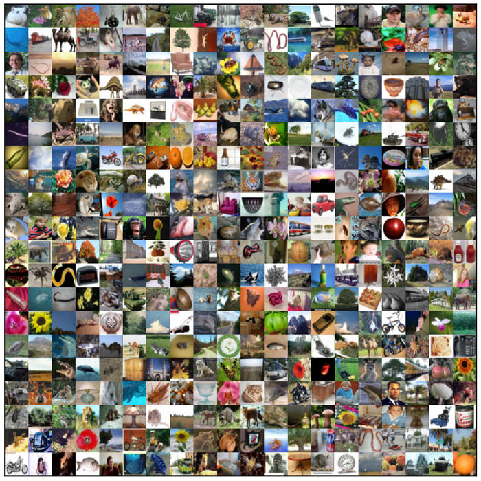
Developed a deep learning model for multi-class image classification on the CIFAR-100 dataset, utilizing transfer learning with various pretrained models, including YOLOv8 and other state-of-the-art architectures. Implemented fine-tuning, data augmentation, and optimization strategies to enhance model generalization and accuracy. This project highlights the application of deep learning in complex image recognition tasks, demonstrating the effectiveness of pretrained models in handling diverse object categories.

Implemented a real-time instance segmentation system using YOLOv8, enabling precise object detection and segmentation in dynamic environments through a user-friendly web app built with Streamlit. This solution empowers users to perform accurate, on-the-fly analysis for a wide range of applications.
Developed a Generative Adversarial Network (GAN) to generate high-quality, synthetic images from the MNIST dataset. This project showcases my expertise in generative AI, leveraging advanced machine learning techniques to create realistic handwritten digit images. The model demonstrates the power of GANs in learning complex data distributions and generating new samples that closely resemble real-world data.
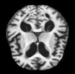
Developed a deep learning model for early detection and classification of Alzheimer's disease stages using Convolutional Neural Networks (CNNs) and pretrained models. This solution enhances the accuracy of medical diagnoses, facilitating early intervention and improved healthcare outcomes.
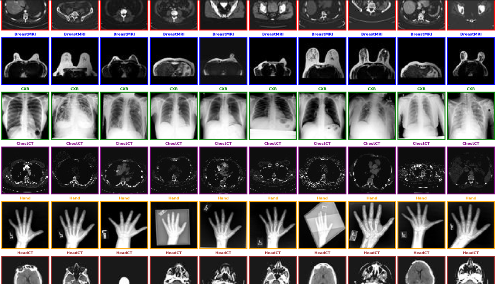
Fine-tuned the ResNeXt-50 model to classify medical conditions using the Medical MNIST dataset, achieving 100% accuracy on the test set. By leveraging the power of a pre-trained ResNeXt-50 model, the system was adapted for medical image classification with advanced techniques such as transfer learning, data augmentation, and mixed precision training. The model's performance was further enhanced through optimization of loss functions and evaluation with metrics like classification reports and confusion matrix. This project highlights the effectiveness of deep learning in medical diagnostics, demonstrating how fine-tuning pre-trained models can lead to exceptional results in healthcare applications.
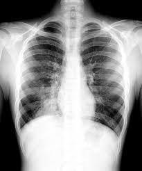
Designed and implemented a deep learning-based pneumonia detection system using Convolutional Neural Networks (CNNs) on chest X-ray images. Leveraged transfer learning with pretrained models to enhance classification accuracy, contributing to automated medical diagnostics and early disease detection.
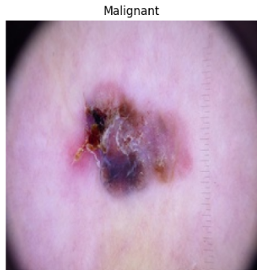
Designed and implemented a deep learning-based skin cancer classification system to distinguish between benign and malignant lesions. Leveraged both custom CNN architectures and state-of-the-art pre-trained models, including ResNet, DenseNet, VGG, and Inception v3, to enhance feature extraction and improve classification accuracy. The model was trained using extensive data preprocessing, augmentation techniques, and optimization strategies to achieve high performance. This project showcases the potential of AI in dermatology, aiding in early detection and diagnosis of skin cancer through automated image analysis.
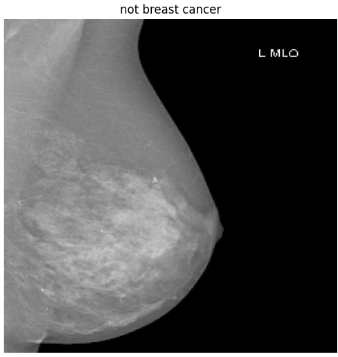
Developed a deep learning-based system for binary classification of breast cancer using mammogram images, distinguishing between malignant and benign cases. Implemented state-of-the-art models, including YOLO for advanced feature detection and EfficientNet and ResNet18 for robust classification. Leveraged transfer learning and optimized training techniques to enhance accuracy and generalization. This project highlights the application of AI in medical imaging, contributing to early breast cancer detection and improving diagnostic efficiency in healthcare.
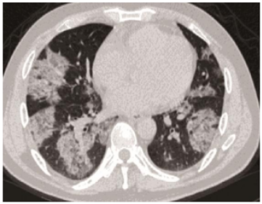
Developed a deep learning model for binary classification of COVID-19 using chest X-ray images, distinguishing between COVID-positive and healthy cases. Utilized pretrained models such as ResNet18, VGG, DenseNet, and EfficientNet alongside a custom CNN to enhance feature extraction and classification accuracy. Applied transfer learning and optimization techniques to improve model generalization. This project demonstrates the role of AI in accelerating COVID-19 detection, aiding in automated diagnostics and medical decision-making.

Developed and fine-tuned convolutional neural networks (CNNs) for multi-class classification of brain tumor images. Leveraged a combination of custom architectures and state-of-the-art pretrained models to achieve an impressive 97% accuracy, demonstrating proficiency in advanced image classification tasks.
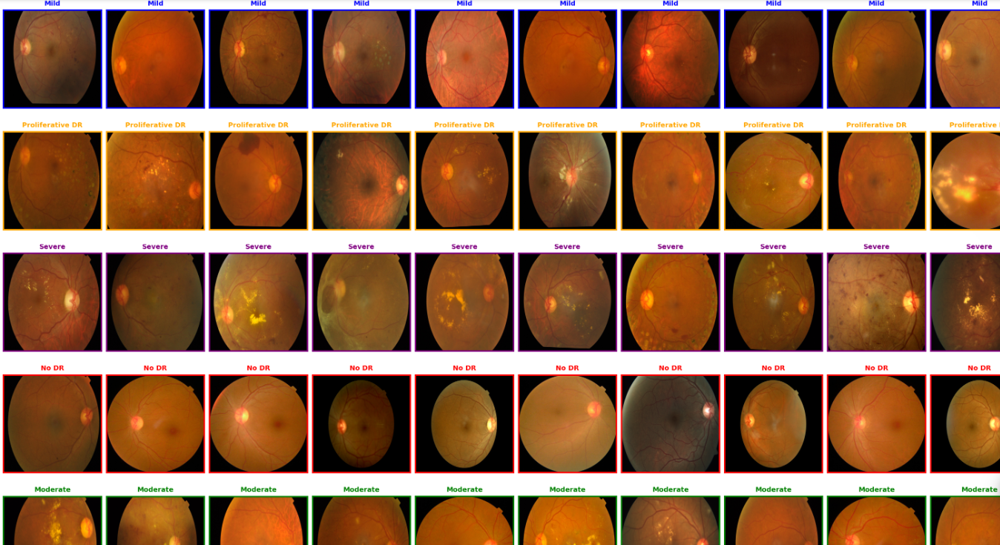
Developed a deep learning model for multi-class image classification on the APTOS 2019 (JPG) dataset, utilizing transfer learning with various pretrained models, including ResNeXt-50 and other state-of-the-art architectures like Xception model. Implemented fine-tuning, data augmentation, and optimization strategies to enhance model generalization and accuracy. This project highlights the application of deep learning in complex image recognition tasks, demonstrating the effectiveness of pretrained models in handling diverse object categories.
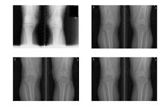
This project focuses on classifying knee osteoarthritis severity using medical images. The dataset includes labeled classes such as "Normal," "Osteopenia," and "Osteoporosis." I implemented ResNeXt50, a powerful convolutional neural network, to accurately classify the images into their respective categories.
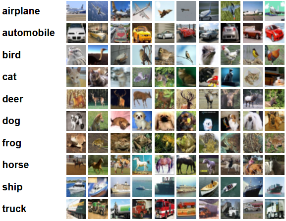
Developed a multi-class image classification model for the CIFAR-10 dataset using a combination of YOLO and custom CNN architectures. This project demonstrates my ability to adapt and fine-tune deep learning models for diverse tasks, achieving high performance in image classification.
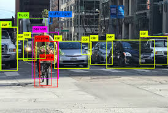
Developed a real-time object detection system using YOLOv8 models, enabling users to detect objects from images or live webcam feeds. The application was deployed using Streamlit, allowing users to select different YOLO models and save detection results. This project demonstrates the power of deep learning in real-time vision tasks, providing a user-friendly interface for object recognition.
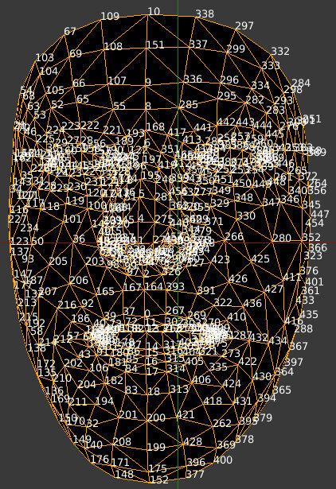
Implemented a real-time facial landmark detection system using MediaPipe's Face Mesh solution. This project enables efficient and accurate tracking of facial key points with minimal computational overhead, making it suitable for applications such as augmented reality (AR), virtual avatars, and facial expression analysis.

Developed a real-time virtual mouse system using MediaPipe's hand tracking model, enabling touch-free computer interaction through intuitive hand gestures. This system allows users to move the cursor, click, and perform actions using hand movements, demonstrating the potential of AI-powered human-computer interaction.
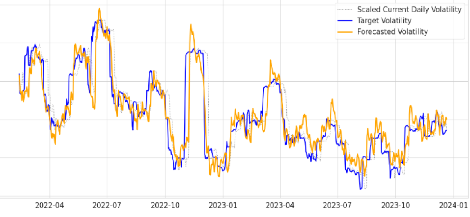
Developed an advanced forecasting model combining Recurrent Neural Networks (RNNs) with statistical techniques such as ARIMA, GARCH, and TARCH to predict Bitcoin price volatility. This hybrid model leverages both deep learning and time-series analysis to deliver accurate volatility predictions, providing valuable insights for investors and financial analysts aiming to make informed decisions in cryptocurrency markets.
Recognition for excellence and innovation in the field of Artificial Intelligence and Machine Learning:
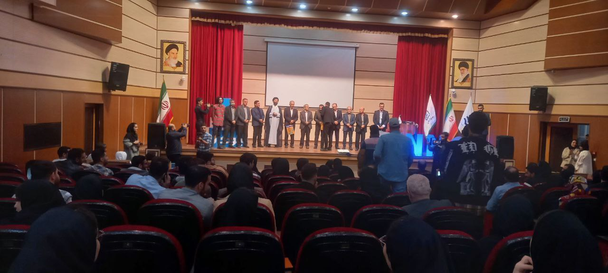
Awarded third place at BINOCUP 2023 at Noshirvani University of Technology for developing an innovative self-coaching system. The solution utilized advanced human pose estimation algorithms to automate workout exercises such as dumbbell curls and squats. Implemented as a fully functional web application, the system provides real-time feedback and form correction, enhancing user workout efficiency and safety without requiring a human personal trainer.
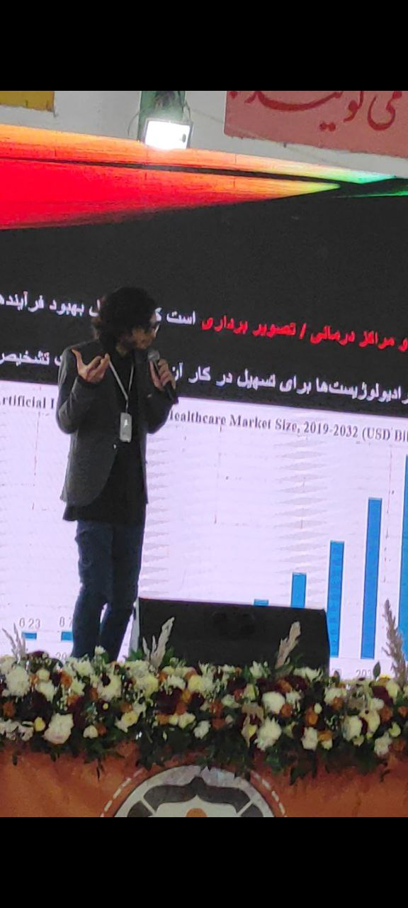
Secured second place at BINOCUP 2024 for presenting an MVP of a cutting-edge medical assistance software. This AI-powered solution was designed to assist radiologists in detecting and analyzing various medical images including MRIs, X-rays, and other diagnostic scans. The system demonstrated remarkable accuracy in identifying critical conditions such as breast cancer and brain tumors, potentially expediting diagnosis timeframes and improving patient outcomes through early detection of pathological anomalies.
Below are some of the courses and certifications I have completed in the field of AI and Machine Learning:

A comprehensive bootcamp on AI fundamentals, where I gained hands-on experience with machine learning algorithms and AI technologies.

This course helped me understand the key concepts of AI, including its applications in various industries and future trends.

Covered data pipeline construction, data architecture, and tools to manage and manipulate large-scale data efficiently.

Focused on the fundamentals of ML algorithms, including supervised and unsupervised learning, and their real-world applications.
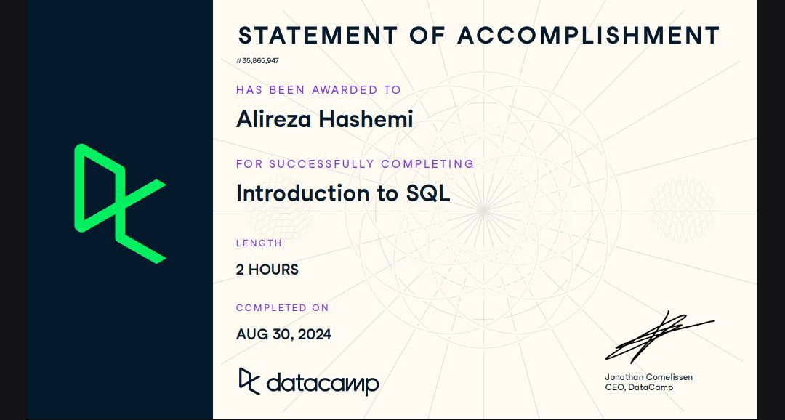
Learned how to query databases using SQL, an essential skill for handling and extracting insights from large datasets.

Explored deep learning techniques using PyTorch, building and training neural networks for various AI tasks.
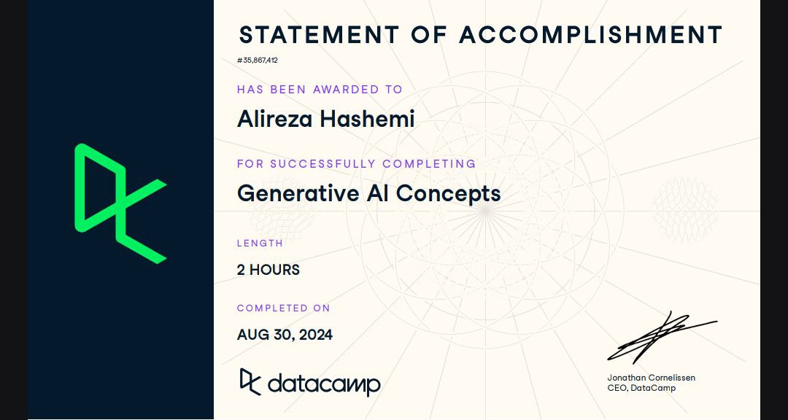
This course introduced me to the principles of generative models, such as GANs and VAEs, and their applications in creative AI tasks.

Focused on the ethical considerations of AI technologies, including bias, privacy, and the societal impact of AI systems.
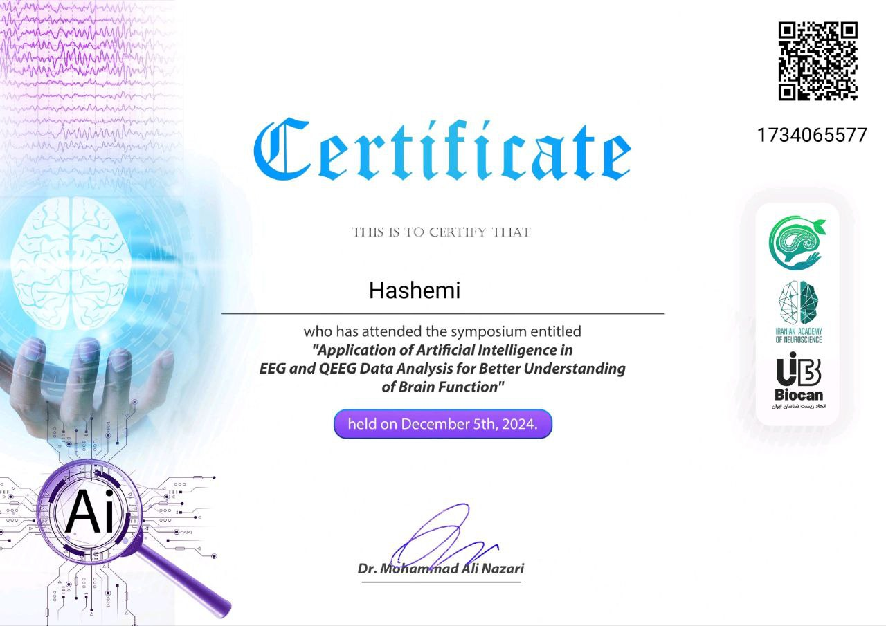
Explored the use of AI to analyze EEG and QEEG data, enabling better understanding of brain activity and cognitive states.
If you'd like to get in touch, discuss collaboration opportunities, or just say hello, feel free to reach out! I'm always open to new ideas and conversations. You can contact me via email or connect with me on social media.